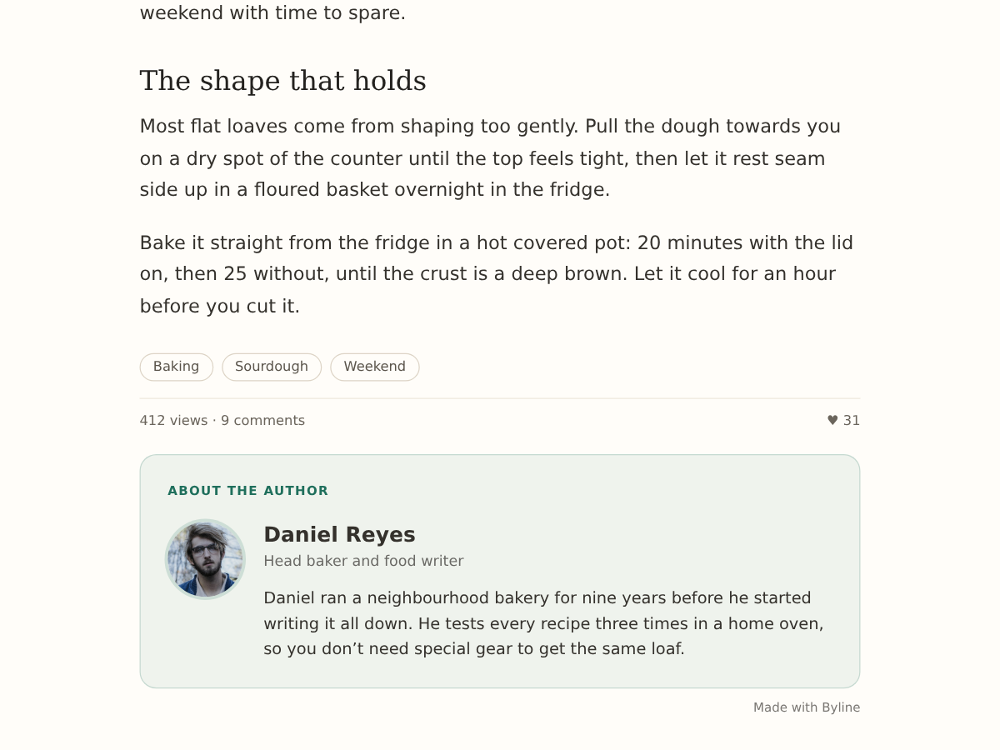

Byline
About the author box under each blog post
- Writer's photo, name, title and bio
- Filled in from each writer's member profile
- Type a bio for writers without one
- More posts by the writer, and co-authors

What it does
A reader who liked your post wants to know who wrote it. This app adds an "About the author" box right under the post text on your blog post page, with the writer's photo, name, title and a short bio.
The details come from the writer's member profile, so every post shows its own writer, and the box follows along when a profile changes. For a writer whose profile is empty you can type a name, title, bio and photo in the box's settings. What you type wins over the profile.
The dashboard adds the box to your blog post page with one button, shows a preview with the writer of your newest post, and lists your writers with a note on who still needs a bio.
The free plan shows the card look with photo, name, title and bio, plus a small credit link. Premium adds two more looks (Line and Spotlight), social links for each writer, "More posts by" with the writer's three newest posts, up to three co-authors on a post, and schema.org author data so search engines can tell who wrote it. Premium also removes the credit link.
The app stores nothing. It reads your posts and the public profile details of their writers, never e-mails or contact details.
Price
Free
- Author box under blog posts
- Photo, name, title and bio
- Type bios for any writer
- Small credit link
Premium
$4/month, 20% off yearly. Hidden pre-made plan "Premium" (vendorId premium) stays hidden
- 3 looks and social links
- More posts by the writer
- Co-authors and author SEO data
- Remove the credit link